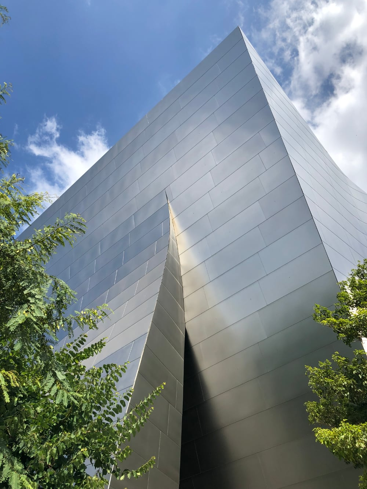
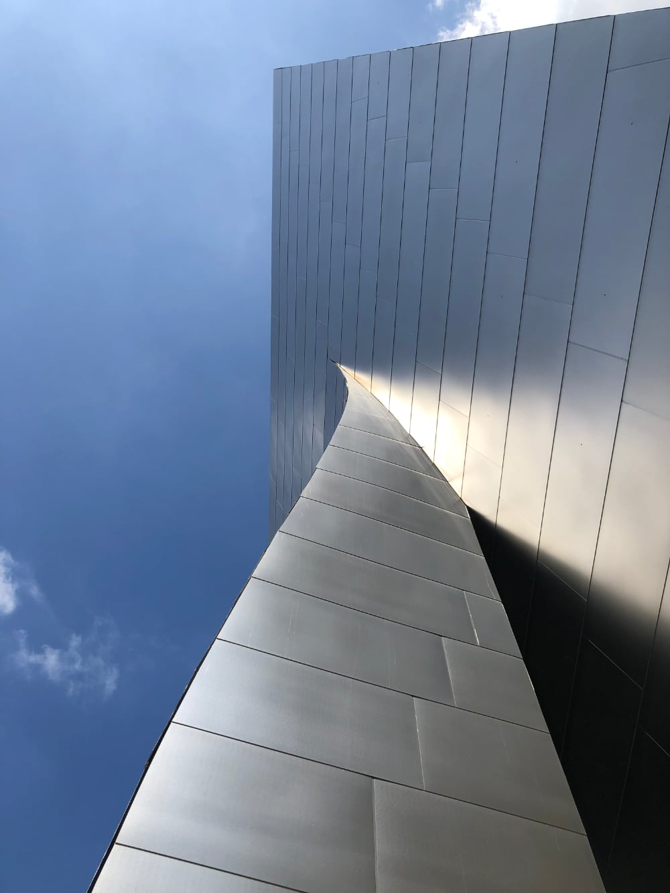
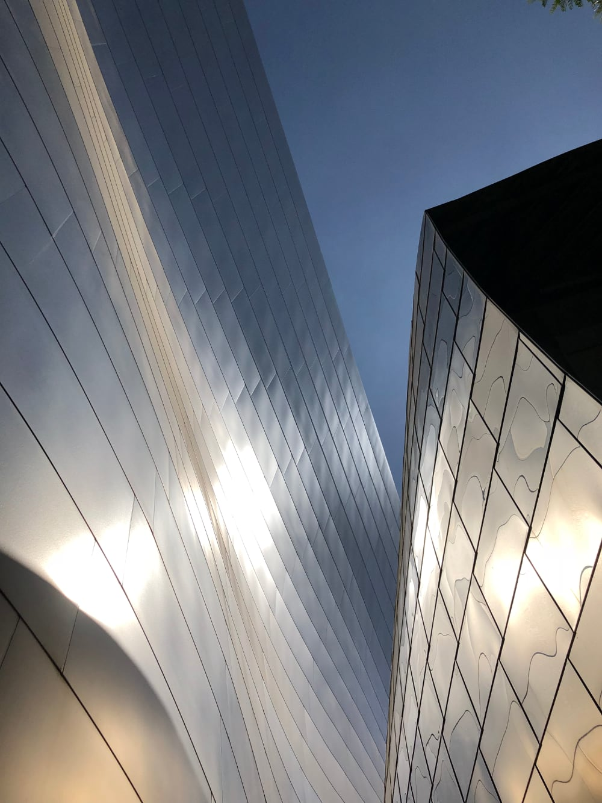
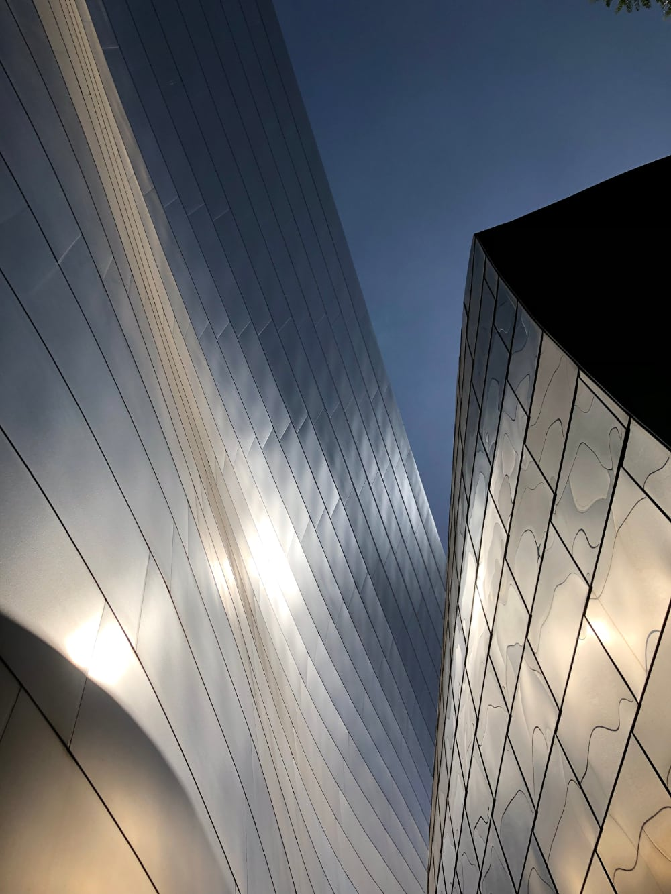
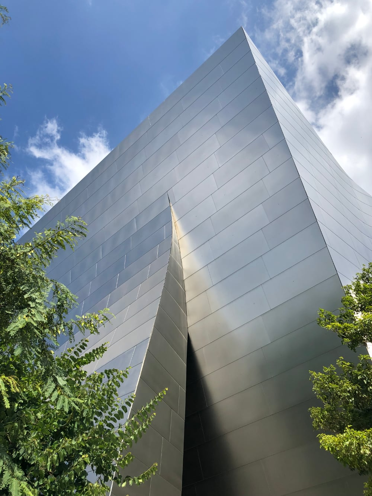
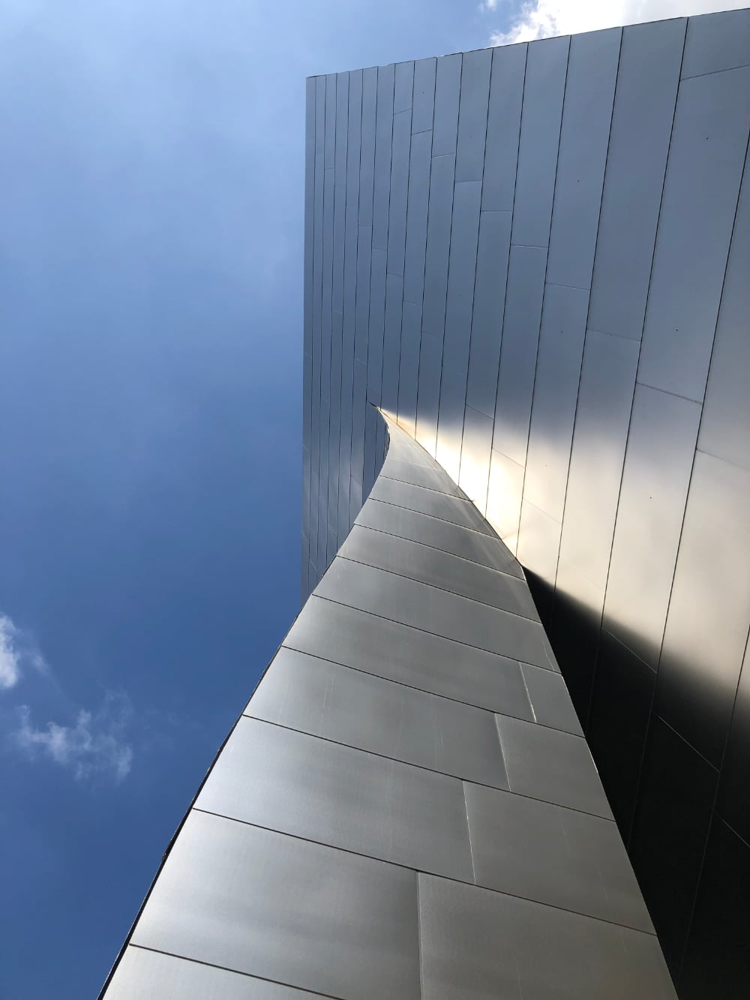
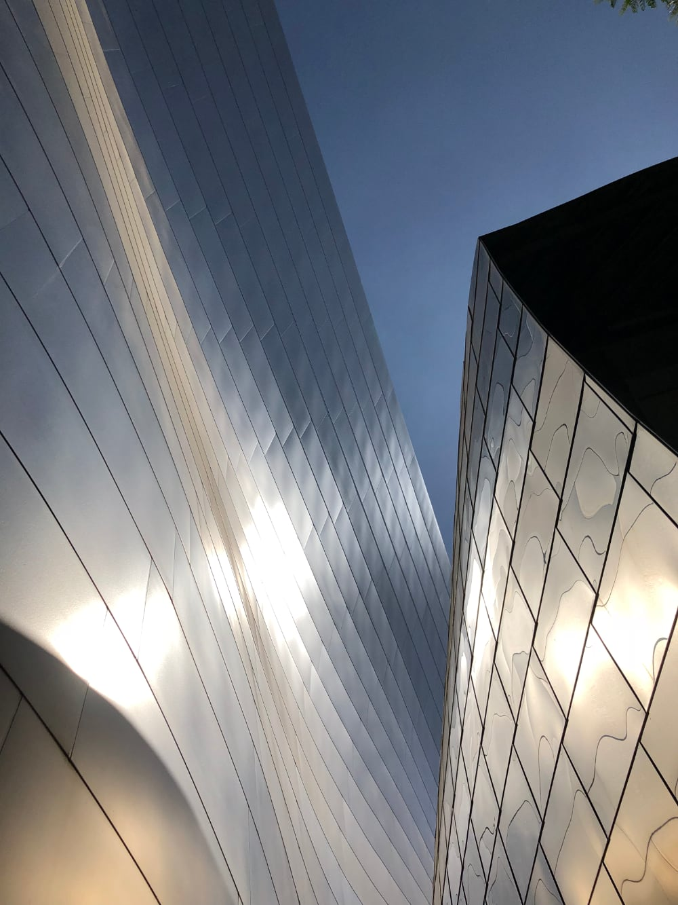
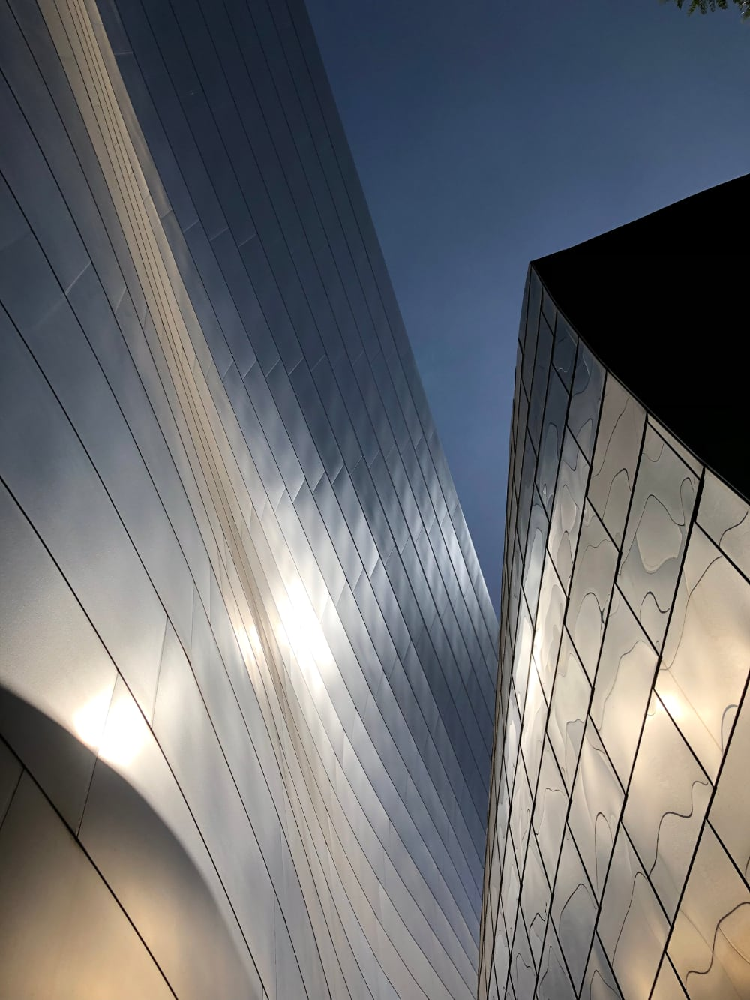

As construction finished in the spring of 2003, the Philharmonic postponed its grand opening until the fall and used the summer to let the orchestra and Master Chorale adjust to the new hall. Performers and critics agreed that it was well worth this extra time taken by the time the hall opened to the public. During the summer rehearsals a few hundred VIPs were invited to sit in including donors, board members and journalists. Writing about these rehearsals, Los Angeles Times music critic Mark Swed wrote the following account:
When the orchestra finally got to practice in Disney, it was to rehearse Ravel's lusciously orchestrated ballet, Daphnis and Chloé. This time, the hall miraculously came to life. Earlier, the orchestra's sound, wonderful as it was, had felt confined to the stage. Now a new sonic dimension had been added, and every square inch of air in Disney vibrated merrily. Toyota says that he had never experienced such an acoustical difference between a first and second rehearsal in any of the halls he designed in his native Japan. Salonen could hardly believe his ears. To his amazement, he discovered that there were wrong notes in the printed parts of the Ravel that sit on the players' stands. The orchestra has owned these scores for decades, but in the Chandler no conductor had ever heard the inner details well enough to notice the errors.
The walls and ceiling of the hall are finished with Douglas-fir while the floor is finished with oak. Columbia Showcase & Cabinet Co. Inc., based in Sun Valley, CA, produced all of the ceiling panels, wall panels and architectural woodwork for the main auditorium and lobbies. The Hall's reverberation time is approximately 2.2 seconds unoccupied and 2.0 seconds occupied.
The hall met with laudatory approval from nearly all of its listeners, including its performers. In an interview with PBS, Esa-Pekka Salonen, Music Director of the Los Angeles Philharmonic, said, "The sound, of course, was my greatest concern, but now I am totally happy, and so is the orchestra," and later said, "Everyone can now hear what the L.A. Phil is supposed to sound like." This remains one of the most successful grand openings of a concert hall in American history.
 






